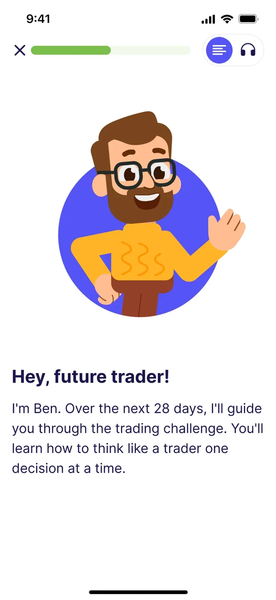

Learn
Complete one short, focused lesson per day.
Step 1 →The Finelo app breaks trading and investing down into short lessons and practice trades, so you can learn one step at a time.
Choose trading or investing. Explore the fundamentals or learn how to use AI.
Understand buy, sell or hold decisions, risk management and market psychology.
Use AI for short- and medium-term analysis.
Study compounding, diversification and patient investing.
Learn to use AI to support long-term research.
Each lesson explains one idea, asks you to decide, shows what happens and gives you time to reflect.

Put lessons into practice with real market data and virtual funds.
Demo mode. Virtual funds. No brokerage account needed.
Try the simulator
Choose a chart, an asset or a time period to start an analysis.
Review trends, volatility, price levels and related news.
Study patterns in price charts and how similar patterns resolved in the past.
Explore concepts and market events in plain language.
Build a daily learning habit.
Progress is measured by learning activity.
Mark milestones in lessons and simulator practice.
Start with a clear path through market fundamentals.
Begin with short lessons and virtual practice.
Follow a defined 28-day plan.
Use the simulator to explore different decisions.
Learn how AI tools fit into research and analysis.
Finelo is an educational product. Demo practice uses virtual funds.
In Demo mode, you practice with virtual funds without placing real trades or connecting a brokerage account. Brokerage connection availability depends on your region.
The simulator uses real market data and virtual funds to help you practice making decisions. Real trades take place through your own brokerage account.
Regular trading apps often assume you already understand orders, spreads, liquidity and risk. Finelo starts with those concepts so you can practice before risking real money.
| Regular trading apps | Finelo |
|---|---|
| Built to place trades | Built to teach decisions |
| Real money on the line | Virtual funds in a simulator |
| Assumes market knowledge | Designed for absolute beginners |
| Focuses on execution speed | Focuses on learning and confidence |
| Little reflection or feedback | Lessons, quizzes, scenarios, and practice |
An educational app with short trading and investing lessons and a simulator.
Finelo is designed for learning and practice.
The simulator uses virtual funds.
It lets you practise buy, sell and hold decisions with virtual funds and market data.
Yes. Demo mode is designed for virtual practice.
The AI track includes AI Chart Analyzer, Smart Pattern Finder and AI Mentor.
Start with the questionnaire to find a 28-day learning path.
Finelo is an educational product. Brokerage connection availability depends on your region.
Pick a challenge, finish a lesson, and practise with virtual funds.
Start learning with Finelo